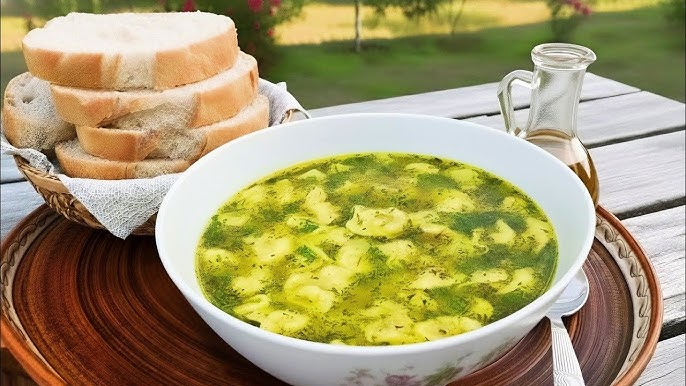

Home
Dushbara recipe

Description
Dushbara is a traditional Azerbaijani soup made with tiny meat-filled dumplings served in a clear broth. The
dumplings are usually smaller than typical ravioli, and the soup is light, aromatic, and comforting. It is a
festive dish, often prepared for special occasions and family gatherings. A touch of vinegar or lemon juice is
sometimes added before serving to enhance the flavor.
Ingredients
- 2 cups all-purpose flour
- 1 large egg
- 1/2 tsp salt
- About 1/2 cup water (adjust to make a firm, elastic dough)
- For the Filling:
- 200–250 g ground lamb or beef (or a mix)
- 1 small onion, finely grated
- Salt and black pepper to taste
- Optional: a pinch of cumin or sumac
- 6 cups water or light broth
- Salt to taste
- 1–2 tbsp dried mint or fresh herbs (optional, for garnish)
- Optional: vinegar or lemon juice for serving
Steps to prepare
- Prepare the Dough:
- Mix flour, egg, and salt in a bowl.
- Gradually add water and knead to form a smooth, firm dough.
- Cover and let it rest for 20–30 minutes.
- In a bowl, combine ground meat, grated onion, salt, pepper, and optional spices.
- Mix well until uniform.
- Roll and Shape Dumplings:
- Roll out the dough thinly (about 1–2 mm).
- Cut into small squares (about 2–3 cm).
- Place a tiny amount of filling in the center of each square.
- Fold the square into a triangle or press edges together to seal tightly. The dumplings should be very small.
- Cook the Soup:
- Bring water or broth to a boil in a large pot.
- Carefully drop the dumplings into the boiling liquid.
- Stir gently to prevent sticking.
- Cook for about 5–7 minutes, until dumplings float and are cooked through.
- Serve:
- Season with additional salt if needed.
- Optionally, add a pinch of dried mint or fresh herbs.
- Serve hot with a splash of vinegar or lemon juice, if desired.